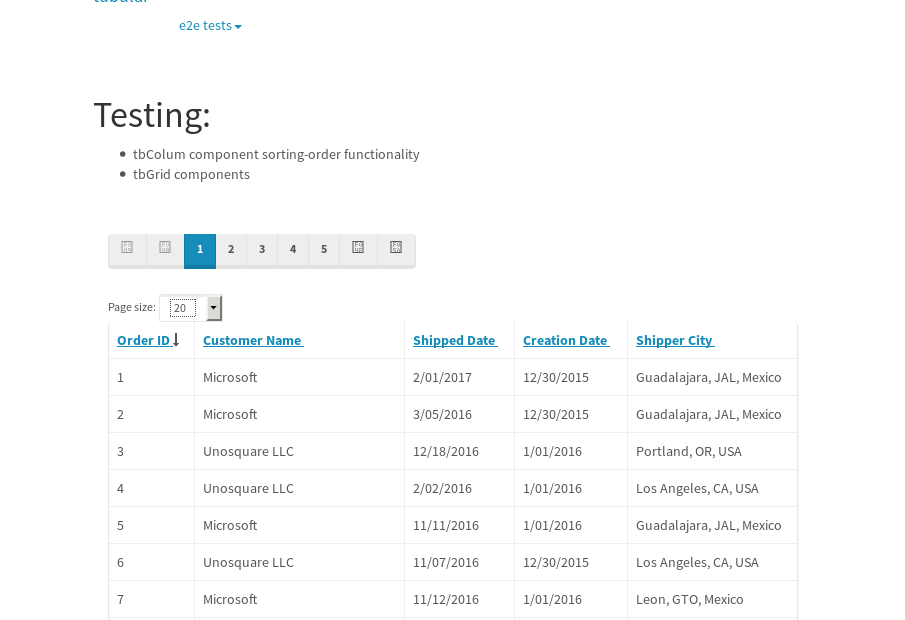
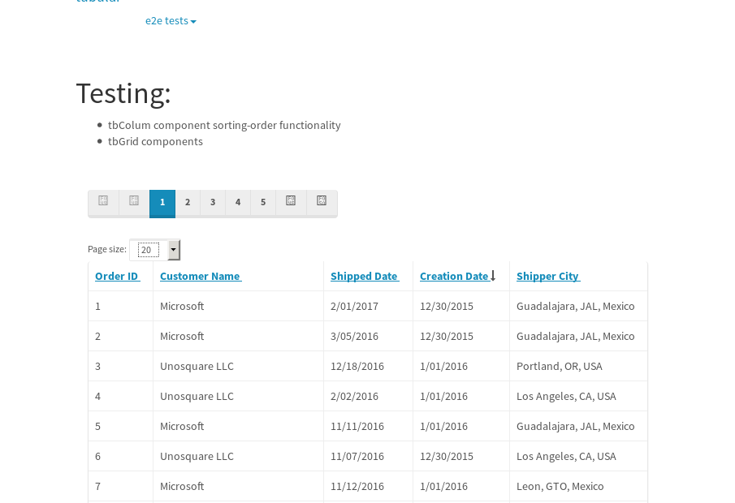
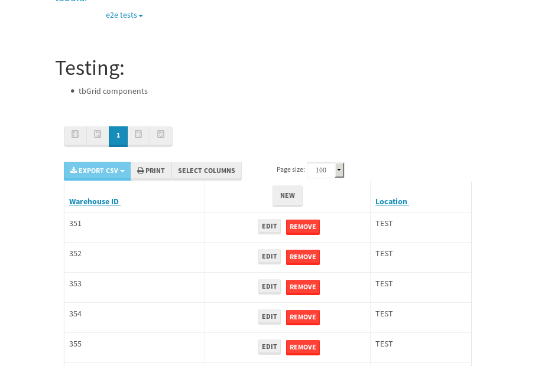

tbColumn.Grid Sorting - 176.439sTests: 5Skipped: 0Failures: 3 should sort data in ascending order then on descending order when sorting by Order Id column - 44.142sExpected '1' to be '500'.✗Expected '20' to be '481'.✗Tests passed: 50.00%should order data in ascending order when click-sorting an unsorted text column - 23.09sTests passed: 100.00%should order data in descending order when click-sorting an ascending-sorted text column - 43.109sExpected 'Advanced Technology Systems' to be 'Vesta'.✗Tests passed: 0.00%should order data in ascending order when click-sorting an unsorted date column - 23.039sTests passed: 100.00%should order data in descending order when click-sorting twice an unsorted date column - 43.051sExpected '12/30/2015' to match /1\/01\/2016/.✗Tests passed: 0.00%
tbEmptyForm - 1.919sTests: 3Skipped: 0Failures: 0 should have an empty required field - 0.271sTests passed: 100.00%should not be able to click on save - 0.031sTests passed: 100.00%should load default value for numeric field - 0.032sTests passed: 100.00%
Tubular Filters.tbColumnFilter - 96.213sTests: 12Skipped: 0Failures: 0 should cancel filtering when clicking outside filter-popover - 7.513sTests passed: 100.00%should disable Value text-input for "None" filter - 5.622sTests passed: 100.00%should disable apply button for "None" filter - 5.835sTests passed: 100.00%should decorate popover button when showing data is being filtered for its column - 11.19sTests passed: 100.00%should correctly filter data for the "Equals" filtering option - 7.819sTests passed: 100.00%should correctly filter data for the "Not Equals" filtering option - 7.491sTests passed: 100.00%should correctly filter data for the "Contains" filtering option - 7.491sTests passed: 100.00%should correctly filter data for the "Not Contains" filtering option - 8.111sTests passed: 100.00%should correctly filter data for the "Starts With" filtering option - 6.33sTests passed: 100.00%should correctly filter data for the "Not Starts With" filtering option - 5.913sTests passed: 100.00%should correctly filter data for the "Ends With" filtering option - 5.925sTests passed: 100.00%should correctly filter data for the "Not Ends With" filtering option - 5.873sTests passed: 100.00%
Tubular Filters.tbColumnDateTimeFilter - 123.296sTests: 12Skipped: 0Failures: 0 should cancel filtering when clicking outside filter-popover - 6.113sTests passed: 100.00%should disable Value text-input for "None" filter - 5.521sTests passed: 100.00%should disable apply button for "None" filter - 5.74sTests passed: 100.00%should clear filtering when clicking on Clean button - 16.361sTests passed: 100.00%should decorate popover button when showing data is being filtered for its column - 10.911sTests passed: 100.00%should correctly filter data for the "Equals" filtering option - 6.145sTests passed: 100.00%should correctly filter data for the "Not Equals" filtering option - 6.389sTests passed: 100.00%should correctly filter data for the "Between" filtering option - 11.152sTests passed: 100.00%should correctly filter data for the "Greater-or-equal" filtering option - 11.407sTests passed: 100.00%should correctly filter data for the "Greater" filtering option - 10.958sTests passed: 100.00%should correctly filter data for the "Less-or-equal" filtering option - 10.667sTests passed: 100.00%should correctly filter data for the "Less" filtering option - 10.792sTests passed: 100.00%
Tubular Filters.tbColumnOptionsFilter - 77.993sTests: 3Skipped: 0Failures: 0 should cancel filtering when clicking outside filter-popover - 7.474sTests passed: 100.00%should decorate popover button when showing data is being filtered for its column - 10.594sTests passed: 100.00%should filter column-elements in accordance to the selected filter when selecting a single option - 48.012sTests passed: 100.00%
Tubular Filters.tbTextSearch - 44.126sTests: 5Skipped: 0Failures: 0 min-chars is not set - 0.09sTests passed: 100.00%should filter data in searchable-column customer name to matching inputted text, starting from 3 characters - 5.967sTests passed: 100.00%should filter data in searchable-column shipper city to matching inputted text, starting from 3 characters - 11.098sTests passed: 100.00%should show clear button when there is inputted text only - 5.582sTests passed: 100.00%should clear filtering when clicking clear button - 15.396sTests passed: 100.00%
tbForm related components.tbCheckboxField - 4.729sTests: 2Skipped: 0Failures: 0 should save changes on "SAVE" - 1.897sTests passed: 100.00%should discard changes on "CANCEL" - 1.553sTests passed: 100.00%
tbForm related components.tbDropDownEditor - 6.616sTests: 5Skipped: 0Failures: 0 should set initial input value to the value of "value" attribute when defined - 0.764sTests passed: 100.00%should show the component name value in a label field when "showLabel" attribute is true - 0.729sTests passed: 100.00%should show a help field equal to this attribute, is present - 0.739sTests passed: 100.00%should submit modifications to item/server when clicking form "Save" - 2.479sTests passed: 100.00%should NOT submit modifications to item/server when clicking form "Cancel" - 1.278sTests passed: 100.00%
tbForm related components.tbTextArea - 9.426sTests: 7Skipped: 0Failures: 0 should set initial input value to the value of "value" attribute when defined - 0.865sTests passed: 100.00%should be invalidated when the number of chars is not in the range of "min" and "max" attributes - 1.263sTests passed: 100.00%should show the component name value in a label field when "showLabel" attribute is true - 0.861sTests passed: 100.00%should show a help field equal to this attribute, is present - 0.793sTests passed: 100.00%should require the field when the attribute "required" is true - 1.141sTests passed: 100.00%should submit modifications to item/server when clicking form "Save" - 2.521sTests passed: 100.00%should NOT submit modifications to item/server when clicking form "Cancel" - 1.161sTests passed: 100.00%
tbForm related components.tbDateEditor - 8.636sTests: 6Skipped: 0Failures: 0 should set initial date value to the value of "value" attribute when defined - 0.778sTests passed: 100.00%should be invalidated when the date is not in the range of "min" and "max" attributes - 1.573sTests passed: 100.00%should show the component name value in a label field when "showLabel" attribute is true - 0.737sTests passed: 100.00%should show a help field equal to this attribute, is present - 0.7sTests passed: 100.00%should submit modifications to item/server when clicking form "Save" - 1.658sTests passed: 100.00%should NOT submit modifications to item/server when clicking form "Cancel" - 2.406sTests passed: 100.00%
tbForm related components.tbTypeaheadEditor - 12.364sTests: 7Skipped: 0Failures: 0 should show an options list when there is an API-info/component entered-data - 1.339sTests passed: 100.00%should select the option clicked - 1.299sTests passed: 100.00%should show a "delete" button when an option/match is selected, and delete the option if button is clicked - 1.592sTests passed: 100.00%should show a label value equal to the component name when "showLabel" attribute is true - 1.272sTests passed: 100.00%should require a value when "require" attribute is true - 1.532sTests passed: 100.00%should submit modifications to item/server when clicking form "Save" - 3.01sTests passed: 100.00%should NOT submit modifications to item/server when clicking form "Cancel" - 1.205sTests passed: 100.00%
tbForm related components.tbSimpleEditor - 13.195sTests: 9Skipped: 0Failures: 0 should set initial input value to the value of "value" attribute when defined - 1.394sTests passed: 100.00%should be invalidated when the number of chars is not in the range of "min" and "max" attributes - 1.449sTests passed: 100.00%should show the component name value in a label field when "showLabel" attribute is true - 0.702sTests passed: 100.00%should set input placeholder to the value of "placeholder" attribute - 0.952sTests passed: 100.00%should validate the control using the "regex" attribute, if present - 0.858sTests passed: 100.00%should show a help field equal to this attribute, is present - 1.418sTests passed: 100.00%should require the field when the attribute "required" is true - 2.287sTests passed: 100.00%should submit modifications to item/server when clicking form "Save" - 2.422sTests passed: 100.00%should NOT submit modifications to item/server when clicking form "Cancel" - 0.983sTests passed: 100.00%
tbForm related components.tbNumericEditor - 9.109sTests: 7Skipped: 0Failures: 0 should set initial component value to the value of "value" attribute when defined - 0.656sTests passed: 100.00%should be invalidated when the entered number is not in the range of "min" and "max" attributes - 1.192sTests passed: 100.00%should show the component name value in a label field when "showLabel" attribute is true - 0.935sTests passed: 100.00%should show a help field equal to this attribute, is present - 0.947sTests passed: 100.00%should require the field when the attribute "required" is true - 0.91sTests passed: 100.00%should submit modifications to item/server when clicking form "Save" - 2.57sTests passed: 100.00%should NOT submit modifications to item/server when clicking form "Cancel" - 1.262sTests passed: 100.00%
tbForm Connection Error NoModelKey - 2.002sTests: 1Skipped: 0Failures: 0 tbForm connection error functionality - 0.003sTests passed: 100.00%
tbForm Connection Error NoServerUrl - 3.411sTests: 1Skipped: 0Failures: 0 tbForm connection error functionality - 0.002sTests passed: 100.00%
tbGridComponents - 31.863sTests: 6Skipped: 0Failures: 1 should add item with newRow method - 5.476sTests passed: 100.00%should add item with newRow method and cancel action - 0.548sTests passed: 100.00%should update item with tbSaveButton - 1.752sTests passed: 100.00%should NOT update item on cancel Update action - 0.877sTests passed: 100.00%should remove item with tbRemoveButton - 20.669sExpected 36 not to be 36, 'should remove the row from the table'.✗Tests passed: 50.00%should NOT remove item on cancel Remove action - 0.809sTests passed: 100.00%
tbGridPager.navigation buttons - 2.61sTests: 1Skipped: 0Failures: 0 should perform no action when clicking on the numbered navigation button corresponding to the current-showing results page - 0.694sTests passed: 100.00%
tbGridPager.navigation buttons.first/non-last results page related functionality - 0.747sTests: 2Skipped: 0Failures: 0 should disable "first" and "previous" navigation buttons when in first results page - 0.136sTests passed: 100.00%should enable "last" and "next" navigation buttons when in a results page other than last - 0.611sTests passed: 100.00%
tbGridPager.navigation buttons.last/non-first results page related functionality - 1.169sTests: 2Skipped: 0Failures: 0 should disable "last" and "next" navigation buttons when in last results page - 0.579sTests passed: 100.00%should enable "first" and "previous" navigation buttons when in a results page other than first - 0.59sTests passed: 100.00%
tbGridPager.page navigation - 4.112sTests: 5Skipped: 0Failures: 0 should go to next results page when clicking on next navigation button - 1.123sTests passed: 100.00%should go to previous results page when clicking on previous navigation button - 1.197sTests passed: 100.00%should go to last results page when clicking on last navigation button - 0.588sTests passed: 100.00%should go to first results page when clicking on first navigation button - 0.643sTests passed: 100.00%should go to corresponding results page when clicking on a numbered navigation button - 0.561sTests passed: 100.00%
tbGridPagerInfo - 4.316sTests: 2Skipped: 0Failures: 0 should show text in accordance to numbered of filter rows and current results-page - 1.832sTests passed: 100.00%should show count in footer - 0.035sTests passed: 100.00%
tbPageSizeSelctor - 14.428sTests: 4Skipped: 0Failures: 0 should filter up to 10 data rows per page when selecting a page size of "10" - 3.039sTests passed: 100.00%should filter up to 20 data rows per page when selecting a page size of "20" - 2.752sTests passed: 100.00%should filter up to 50 data rows per page when selecting a page size of "50" - 3.364sTests passed: 100.00%should filter up to 100 data rows per page when selecting a page size of "100" - 3.672sTests passed: 100.00%
tbSingleForm - 14.084sTests: 8Skipped: 1Failures: 1 should load correct info - 0s***Skipped***Tests passed: 0%should change customer name - 1.872sTests passed: 100.00%should save it - 2.079sExpected '' to be 'Saved'.✗Tests passed: 50.00%should clear the inputs - 2.092sTests passed: 100.00%should update - 2.071sTests passed: 100.00%should reset editor - 1.94sTests passed: 100.00%should not save if not Changes - 2.15sTests passed: 100.00%should not be able to click on save - 1.876sTests passed: 100.00%


{kind=link}
{kind=link}
{kind=link}